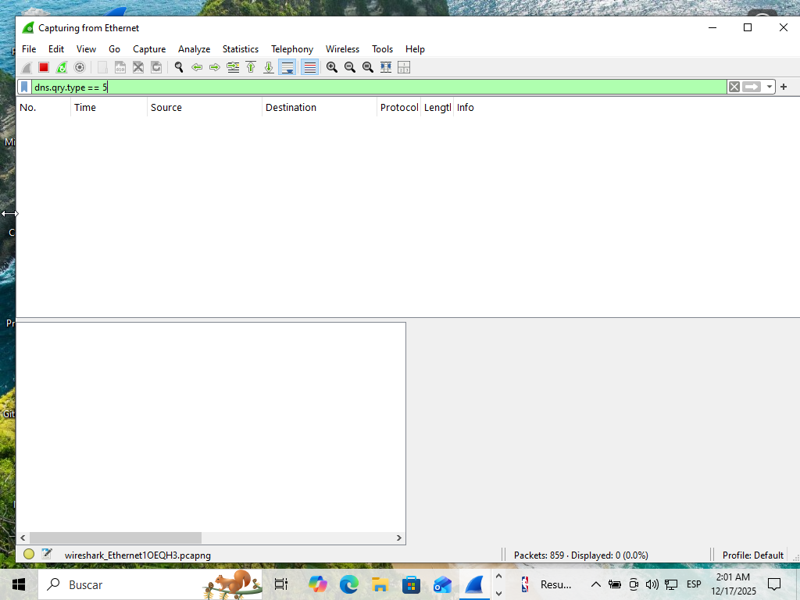
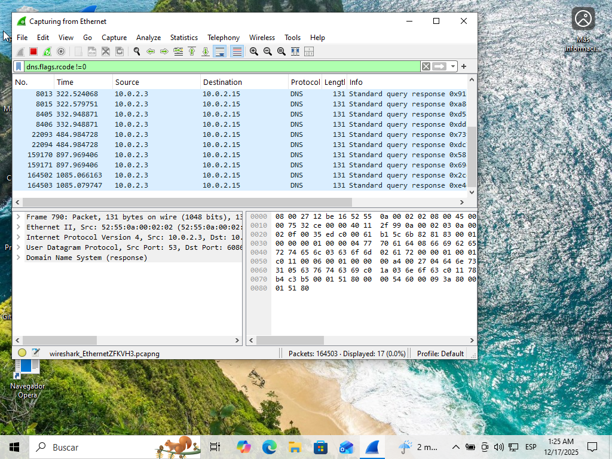
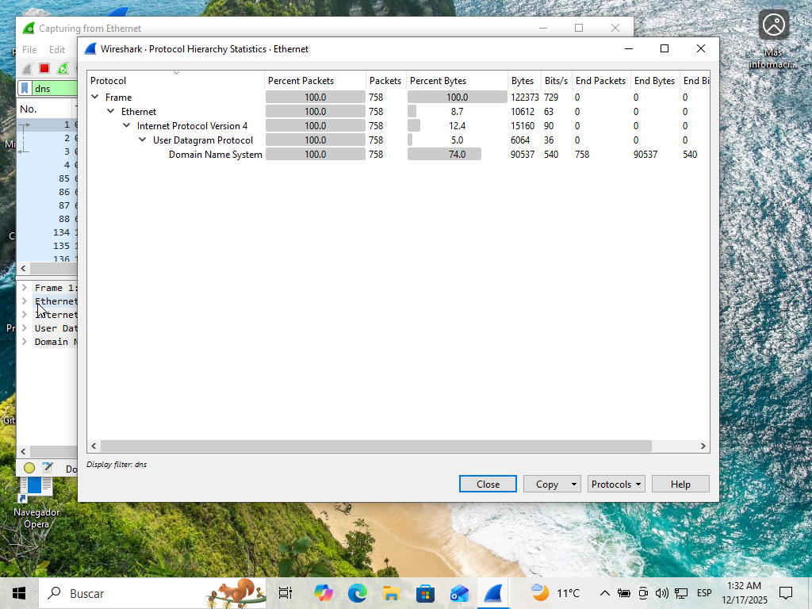

"La visibilidad es la primera línea de defensa. Comprender que un simple error NXDOMAIN puede ser la huella de un troyano intentando comunicarse con su C2 es vital para cualquier analista SOC."
Análisis de Tráfico DNS con Wireshark (Básico)
En esta práctica empezamos a usar Wireshare como herramienta para evaluar el tráfico de red. Ampliamos nuestros conocimientos sobre el protocolo DNS y aprendemos a identificar patrones de tráfico sospechoso, como respuestas NXDOMAIN que pueden indicar actividad maliciosa.
Práctica
01. Análisis de Tráfico DNS con Wireshark (Básico)
Estado: Completado
Fecha: 22/11/2025
Resumen Ejecutivo
Se realizó una auditoría de tráfico sobre el protocolo DNS en un entorno controlado (VM Windows 10) durante 60 minutos. El objetivo fue establecer una línea base de comportamiento y detectar posibles anomalías en la resolución de nombres.
159,209
Consultas Analizadas
RCODE 3
Filtro de Error Crítico
0
Amenazas Detectadas
Objetivos de la práctica
- Identificar patrones de tráfico DNS normal vs sospechoso.
- Analizar respuestas NXDOMAIN y su relación con malware (DGA).
- Dominar filtros avanzados de Wireshark para investigación de incidentes.
Herramientas Utilizadas
Wireshark
VirtualBox
Kali Linux
Windows 10 VM
Análisis de Protocolos
Análisis de Tráfico DNS y Detección de Anomalías (NXDOMAIN)
Resumen del Incidente Simulado
Investigación de comportamientos anómalos en la resolución de nombres. Se analizó el tráfico generado tras el arranque del sistema y se simularon consultas a dominios inexistentes para identificar firmas de error en Wireshark.
- Identificación de Reply Code: 3 (Name Error).
- Filtrado de tráfico mediante
dns.flags.rcode != 0. - Diferenciación de tráfico legítimo (boot-up) vs. sintético.
Procedimiento Técnico
Iniciamos la captura en un entorno controlado (VM) para aislar el tráfico. Se ejecutaron consultas nslookup a dominios inexistentes para forzar respuestas de error y observar cómo las herramientas de monitoreo las catalogan.

Figura 1: Saturación inicial de red por servicios del sistema.

Figura 2: Identificación de registros No Such Name.

Figura 3: Captura DNS 10 minutos después de la primera captura iniciar el sistema

Figura 4: Captura DNS después de generar un dominio erróneo para observar el tráfico de red

Figura 5: Captura filtro: dns.qry.type == 1 después de generar un dominio erróneo para observar el tráfico de red

Figura 6: Captura filtro: dns.qry.type == 28 después de generar un dominio erróneo para observar el tráfico de red

Figura 7: Captura filtro: dns.qry.type == 5 después de generar un dominio erróneo para observar el tráfico de red

Figura 8: Captura filtro: dns.flags.rcode !=0 después de generar un dominio erróneo para observar el tráfico de red

Figura 9: Tráfico capturado a través Statistics → Protocol Hierarchy
Observaciones Técnicas del Laboratorio
-
Detección de Anomalías mediante RCODE:
Utilizando el filtro
dns.flags.rcode != 0, se identificaron con precisión los intentos de resolución fallidos. Esta técnica es fundamental en un entorno real para detectar Domain Generation Algorithms (DGA) usados por malware. - Establecimiento de Línea Base (Baseline): Se observó un flujo constante de consultas hacia dominios de telemetría de Microsoft (visto en la Figura 1). Identificar este tráfico "normal" es crucial para reducir falsos positivos durante el monitoreo de seguridad.
- Análisis de Registros CNAME: La alta presencia de registros CNAME confirma el uso de CDNs y servicios en la nube. Desde una perspectiva de seguridad, esto requiere supervisión para evitar ataques de Subdomain Takeover
- Validación de Entorno Aislado: La jerarquía de protocolos (100% UDP/DNS) confirma que la Máquina Virtual operó en un entorno NAT correctamente configurado, sin interferencias de protocolos ruidosos de la red local.
- 0.3% NXDOMAIN: El 0.3% de errores detectados (NXDOMAIN) fue analizado y se determinó que corresponden a pruebas controladas de resolución, descartando actividad de comando y control (C2) maliciosa.
- Resolución Dual-Stack: Se documentó un equilibrio entre consultas Tipo A (IPv4) y Tipo AAAA (IPv6), lo que refleja un comportamiento estándar de sistemas modernos intentando conectividad global.
¿Necesitas el detalle profundo? Aquí puedes ver el informe completo, redactado como lo haría para un equipo de seguridad o en la sección e informes también los puedes encontrar:
Descargar Informe Técnico (PDF) Descargar Informe Ejecutivo (PDF)Conclusiones y Aprendizaje
Plan de Respuesta y Recomendaciones
Basado en los hallazgos, se proponen las siguientes acciones para el equipo de seguridad e infraestructura:
| Evento Detectado | Acción Recomendada | Responsable |
|---|---|---|
| Tráfico de telemetría excesivo | Aplicar Políticas de Grupo (GPO) para endurecimiento (Hardening) del SO. | SysAdmin |
| Errores RCODE 3 controlados | Configurar umbrales de alerta en el SIEM para detectar escaneos DNS. | SOC Analyst (L2) |
| Uso de DNS en texto claro | Implementar DNS over HTTPS (DoH) para evitar interceptación. | Seguridad de Red |